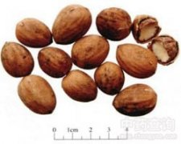

榧子

拼音
Fěi Zǐ
别名
香榧、榧树、玉榧、野杉、柀子
来源
本品为红豆杉科植物榧Torreya grandis Fort.的干燥成熟种子。秋季种子成熟时采收，除去肉质假种皮，洗净，晒干。
生境分布
生长于山坡，野生或栽培。分布于安徽、江苏、浙江、福建、江西、湖南、湖北等地。主产浙江，湖北、江苏，安徽、湖南、江西、福建等地亦产。
药材特点
榧（《别录》），又名：野杉（《纲目》），香榧、木榧。 常绿乔木，高达25米。树皮灰褐色，枝开张，小枝无毛。叶呈假二列状排列，线状披针形，长1.2～2.5厘米，宽2～3毫米，愈向上部愈狭，先端突刺尖，基部几成圆形，全缘，质坚硬，上面暗黄绿色，有光泽，下面淡绿色，中肋显明，在其两侧各有一条凹下黄白色的气孔带。花单性，通常雌雄异株；雄花序椭圆形至矩圆形，具总花梗，雄蕊排成4～8轮，花药4室；雌花无梗，成对生，只1花发育，基部具数对交互对生的苞片，胚珠1，直生。种子核果状、矩状椭圆形或倒卵状长圆形，长2～3厘米，先端有小短尖，红褐色，有不规则的纵沟；胚乳内缩或微内缩。花期4月。种子成熟期为次年10月。
性状
本品呈卵圆形或长卵圆形，长2～3.5cm，直径1.3～2cm。表面灰黄色或淡黄棕色，有纵皱纹，一端钝圆，可见椭圆形的种脐，另端稍尖。种皮质硬，厚约1mm。种仁表面皱缩，外胚乳灰褐色，膜质；内胚乳黄白色，肥大，富油性。气微，味微甜而涩。
性味
甘，平。
功能主治
杀虫消积，润燥通便。用于钩虫、蛔虫、绦虫病，虫积腹痛，小儿疳积，大便秘结。
用法用量
9～15g。
化学成分
种子含脂肪油，中有棕榈酸、硬脂酸、油酸、亚油酸的甘油酯、甾醇。又含草酸、葡萄糖、多糖、挥发油、鞣质等。
药理作用
1：榧子浸膏在试管内对猪蛔、蚯蚓无作用：有谓能驱除猫绦虫
2：日本产榧子含生物碱：对子宫有收缩作用，民间用以堕胎
摘录
《中国药典》